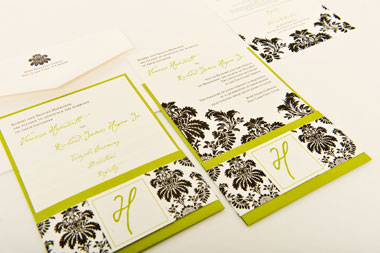

GENERAL DIRECTION (HƯỚNG DẪN CHUNG)
Các bạn đã biết thư được phân ra thành hai dạng cơ bản là thư trang trọng và thư không trang trọng. Nếu như phần thư thân mật, không trang trọng khá phóng khoáng trong cả phần bố cục và nội dung thì thư trang trọng lại yêu cầu các bạn phải viết theo những quy tắc chuẩn đã được đặt ra.
Tuy nhiên phần bố cục, cấu trúc của một bức thư mời trang trọng không quan trọng bằng phần thẩm mỹ của bức thư đó. Một số dạng thư mời trang trọng như thư mời cưới thường được viết theo phần mẫu cố định.
Ngoài ra có thể các bạn
sẽ gặp những bức thư mời cưới với bố cục hoàn hảo nhưng được in trên loại giấy rẻ tiền chất lượng xấu. Lời khuyên đưa ra cho những trường hợp ấy là nếu các bạn không thể in thư mời trên loại giấy tốt thì tốt hơn nên viết tay trên loại giấy trắng, chất lượng tốt. Bởi chất lượng giấy viết thư mời sẽ giúp người nhận thư mời đánh giá được vị thế của người viết thư.
Tuy rằng bố cục của rất nhiều dạng thư mời thường cố định, nhưng đó không phải là cái gì quá khắt khe, cứng nhắc vì vậy mỗi bức thư mời cũng có thể khác biệt đôi chút về thẩm mỹ.
Bên cạnh đó, có một số điều các bạn nên tránh khi viết thư mời trang trọng đó là:
| Các bạn không nên gửi những bức thư bị in lỗi hoặc chất lượng kém. Thư viết tay được đánh giá cao hơn thư đánh máy. | |
| Các bạn không sử dụng giấy màu hoặc giấy có in hình hoa hay trang trí phức tạp. | |
| Các bạn không nên viết bằng giấy đơn. | |
| Các bạn không nên sử dụng giấy có bản quá lớn hoặc quá nhỏ hay không phù hợp. | |
| Các bạn không nên sử dụng lối viết trang trọng cho những vấn đề bình thường, không trang trọng. | |
| Các bạn không nên viết tắt bất kỳ từ nào. Viết tắt tên riêng bằng những chữ cái in hoa có thể được sử dụng và chấp nhận trong phần thư mời không trang trọng. Tuy nhiên, trong phần thư mời trang trọng các bạn nên tránh sử dụng. Ví dụ: "H. E. Jones" phải được viết đầy đủ thành "Horatio Etherington Jones." |
|
| Các bạn không nên sử dụng ngôi thứ nhất khi trả lời thư mời trang trọng. | |
| Nếu nhận được thư mời trang trọng sử dụng ngôi thứ ba thì các bạn cũng nên trả lời thư bằng ngôi thứ ba. | |
| Các bạn không nên sử dụng giấy có in sẵn tên họ và chức danh để viết thư nhận lời hoặc lấy làm tiếc vì đã từ chối. | |
| Các bạn không nên viết chữ quá cầu kỳ hoặc trang trí quá nhiều. | |
| Các bạn không nên quá lạm dụng văn phong trang trọng cũng như không trang trọng mà nên sử dụng chúng một cách linh hoạt. |
Các bạn hãy lưu ý nên gửi thư trả lời hoặc thông báo đã nhận được thư ngay trong tuần bạn nhận được thư mời. Bởi việc các bạn chậm trễ trả lời là thiếu lịch sự và có thể khiến người viết thư mời cảm thấy hồ nghi về quyết định của các bạn.
Ngoài ra các bạn nên đưa ra
quyết định của mình một cách dứt khoát trong phần trả lời thư mời.
FORMAL INVITATIONS (THƯ MỜI TRANG TRỌNG)
WEDDING INVITATIONS (THƯ MỜI CƯỚI)
Thư mời cưới nên được gửi trong khoảng ba tuần (thực ra chỉ nên trong khoảng 15 ngày) trước khi hôn lễ diễn ra.
Phần tên và
địa chỉ các bạn nên viết ở bên ngoài phong bì.
Sau đây bài giảng sẽ giới thiệu cho các bạn phần thư mời cưới viết đúng cách:
For a restaurant, hotel wedding (Cho lễ cưới được tổ chức tại nhà hàng, khách sạn)
| (A) | Mr. Hoang Anh and Mrs. Thao Vi Request the Honour of ---- (phần để ghi tên khách) Presence at the Marriage of Their Daughter Hoang Tuyet and Mr. Trong Hung on the Evening of Monday, the Eighth of June at Six o'Clock At the Melia Hanoi hotel ,44B Ly Thuong Kiet, Hoan Kiem, Hanoi |
| Hoặc | |
| (B) | Mr. Hoang Anh and Mrs. Thao Vi Request the Honour of Your Presence at The Marriage of Their Daughter Hoang Tuyet and Mr. Trong Hung on Monday, June the Eighth At Six o'Clock At the Melia Hanoi hotel ,44B Ly Thuong Kiet, Hoan Kiem, Hanoi |
For a home wedding (Cho lễ cưới được tổ chức tại nhà)
Các bạn hãy quan sát phần thư mẫu dưới đây:
| Mr. Hoang Anh and Mrs. Thao Vi Request the Pleasure of ---- (phần để ghi tên) Company at the Marriage of Their Daughter Hoang Tuyet and Mr. Trong Hung on Wednesday, June the Tenth At Twelve o'Clock Five 56 Ho Tung Mau, Cau Giay, Ha Noi |
Cả hai ví dụ A và B ở phần thư mời cho lễ cưới được tổ chức tại nhà hàng, khách sạn đều sử dụng cụm từ "Honour of your presence". Bởi cụm từ này trang trọng hơn so với cụm từ "pleasure of your company" nên dùng cho trường hợp lễ cưới được tổ chức ở nhà hàng, khách sạn sẽ phù hợp hơn.
For a wedding reception (Cho bữa tiệc chiêu đãi của lễ cưới)
Dạng thư mời này sẽ được sử dụng
trong trường hợp lễ cưới và tiệc chiêu đãi được tổ chức ở hai nơi khác nhau. Ví dụ, cô dâu chú rể là người theo đạo nên nghi thức cưới sẽ diễn ra ở nhà thờ. Tuy nhiên phần tiệc cưới để mời khách lại được tổ chức ở một nhà hàng hay khách sạn nào đó.
Các bạn hãy quan sát phần thư mẫu dưới đây:
Mr. Hoang Anh and Mrs. Thao Vi Request the Pleasure of Your Company At the Wedding Reception of Their Daughter Hoang Tuyet and Mr. Trong Hung on Monday Afternoon, June the Third At Four o'Clock Five 56 Ho Tung Mau, Cau Giay, Ha Noi |
Ngoài ra các bạn lưu ý, trong phần thư trang trọng từ "honour" nên viết theo kiểu Anh Anh bao gồm cả chữ "u" (Nếu viết theo kiểu Anh Mỹ sẽ là "honor")
Recalling an Invitation (Rút lại lời mời)
Thông thường đám cưới sẽ được cử hành theo đúng lịch đã định, tuy nhiên lễ cưới cũng có thể bị trì hoãn do sự cố về bệnh nặng hoặc tang ma. Trong những trường hợp ấy, phần lời mời sẽ được rút lại. Và phần rút lại lời mời ấy có thể đưa ra hoặc không nói lý do hoãn hoặc hủy bỏ đám cưới tùy vào từng trường hợp cụ thể. Phần thư rút lại lời mời có thể được đánh máy nếu thời gian gấp rút, tuy nhiên nếu có thể các bạn nên viết tay.
Các bạn hãy quan sát phần ví dụ dưới đây:
| (A) | Owing to the Death of Mr. Trong Hung's Mother, Mr. Hoang Anh and Mrs. Thao Vi beg to Recall the Invitations for Their Daughter's Wedding on Monday, June the Eighth. |
| (B) | Mr. Hoang Anh and Mrs. Thao Vi beg to Recall The Invitations for the Marriage of Their Daughter, Hoang Tuyet , and Mr. Trong Hung, on Monday, June the Eighth |
Wedding announcements (Phần thư thông báo về đám cưới)
Nếu đám cưới được tổ chức bí mật, riêng tư thì không vần phải viết thư mời trang trọng mà chỉ cần mời miệng hoặc mời qua điện thoại một vài người họ hàng hoặc bạn bè thân thiết. Tuy nhiên
trong trường hợp ấy vẫn cần có một phần thư thông báo về đám cưới có thể là thư tay hoặc được gửi qua e-mail trong ngày hôm đó để nhắc nhở mọi người về thời gian và địa điểm diễn ra lễ cưới.
Phần thư thông báo đám cưới ấy sẽ được viết bởi người đã gửi lời mời, có thể là bố mẹ, họ hàng thân thích hoặc chính cô dâu, chú rể.
Các bạn hãy quan sát phần ví dụ dưới đây:
| Mr. Hoang Anh and Mrs. Thao Vi Announce the Marriage of Their Daughter Hoang Tuyet to Mr. Trong Hung on Monday, June the Tenth 56 Ho Tung Mau, Cau Giay, Ha Noi |
Replying to the invitation (Trả lời thư mời)
Thư đồng ý hoặc từ chối lời mời trang trọng cần thiết phải viết bằng văn phong trang trọng nhưng các bạn nên viết thư tay chứ không nên đánh máy. Điều đó sẽ thể hiện sự tôn trọng đối với người viết thư mời cũng như thành ý của các bạn.
Ngoài ra các bạn nên viết thư trả lời càng sớm càng tốt. Bởi sẽ rất mất lịch sự nếu các bạn viết thư trả lời là đồng ý hoặc từ chối tham gia chỉ một, hai ngày trước khi đám cưới được diễn ra. Điều đó sẽ đẩy người mời vào thế bị động, khó sắp xếp công việc.
Sau đây
các bạn hãy quan sát phần ví dụ dưới đây:
Accepting (Nhận lời)
| Mr. Trong Thanh and Mrs. Mai Hoa accept with pleasure Mr. Hoang Anh and Mrs. Thao Vi's kind invitation to be present at the marriage of their daughter Hoang Tuyet and Mr. Trong Hung on Monday, June the twelfth at twelve o'clock | |
| Hoặc | |
| Mr. Trong Thanh and Mrs. Mai Hoa accept with pleasure Mr. Hoang Anh and Mrs. Thao Vi's kind invitation to be present at the marriage of their daughter Hoang Tuyet and Mr. Trong Hungon Monday, June the twelfth at twelve o'clock |
Regretting (Tiếc vì không tham dự được)
| Mr. Trong Thanh and Mrs. Mai Hoa regret exceedingly that they are unable to accept Mr. Hoang Anh and Mrs. Thao Vi's kind invitation to be present at the marriage of their daughter Hoang Tuyet and Mr. Trong Hungon Monday, June the twelfth |
FORMAL EATTING INVITATIONS (THƯ MỜI ĂN TRANG TRỌNG)
Formal dinner invitations (Thư mời ăn tối trang trọng)
Những bức thư mời ăn tối trang trọng thường được đánh máy như ví dụ dưới đây. Tuy nhiên, trong trường hợp các bạn viết tay phần thư mời thì bố cục sẽ không khác gì một bức thư thông thường. Nếu sử dụng phần giấy đã in sẵn địa chỉ các bạn không cần phải ghi địa chỉ ở cuối như những bức thư thông thường.
Sau đây
các bạn hãy quan sát phần ví dụ dưới đây:
| (A) | Mr. Hoang Anh and Mrs. Thao Vi Request the Pleasure of Mr. and Mrs. Trent's Company at Dinner On Thursday, October the First at Seven o'Clock and Afterward for the Play (or Opera, etc.) 100% Park Avenue |
| (B) | Mr. Hoang Anh and Mrs. Thao Vi Request the Pleasure of Mr. and Mrs. Trent's Company for Dinner and Opera on Thursday, October the First at Seven o'Clock |
Accepting (Nhận lời)
| Mr. and Mrs. George Trent accept with much pleasure Mr. Hoang Anh and Mrs. Thao Vi's kind invitation for dinner on Thursday, October the first, at seven o'clock and afterward for the opera 788 East Forty-Sixth Street |
Regretting (Tiếc vì không tham dự được)
| Mr. and Mrs. George Trent regret that they are unable to accept the kind invitation of Mr. Hoang Anh and Mrs. Thao Vi for dinner and opera on Thursday, October the first, owing to a previous engagement. 788 East Forty-Sixth Street |
For a dinner not at home (Cho bữa tối không được tổ chức tại nhà)
| Mr. Hoang Anh and Mrs. Thao Vi Request the Pleasure of Mrs. and Miss Pearson's Company at Dinner At Sherry's on Friday, March the Thirtieth At Quarter Past Seven o'Clock 100% Park Avenue |
Accepting (Nhận lời)
| Mrs. Richard Pearson and Miss Pearson accept with much pleasure Mr. Hoang Anh and Mrs. Thao Vi's very kind invitation for dinner at Sherry's on Friday, March the thirtieth at quarter past seven o'clock 640 West Seventy-Second Street |
Regretting (Tiếc vì không tham dự được)
Mrs. Richard Pearson and Miss Pearson regret exceedingly that they are unable to accept Mr. Hoang Anh and Mrs. Thao Vi's very kind invitation for dinner at Sherry's on Friday, March the thirtieth owing to a previous |
Hoặc phần trả lời có thể theo bố cục như sau:
Accepting (Nhận lời)
640 West Seventy-Second Street, March 16, 1920. Mr. and Mrs. Richard Pearson accept with pleasure Mrs. John Evans's kind invitation for Friday evening, March the thirtieth. |
Regretting (Tiếc vì không tham dự được)
640 West Seventy-Second Street March 16, 1920. Mr. and Mrs. Richard Pearson regret sincerely their inability to accept Mrs. John Evans's kind invitation for Friday evening, March the thirtieth. |
Những phần thông báo trên đều viết theo văn phong trang trọng nên các bạn hãy lưu ý sử dụng ngôi thứ ba. Ngoài ra phần thư trả lời, thông báo ấy nên được gửi lại trong vòng 24h kể từ thời điểm nhận được thư.
Dinner "to meet" (Bữa ăn tối để gặp ai đó)
Nếu bữa tối được tổ chức để gặp mặt một người quan trọng hoặc một người bạn từ xa đến phần mục đích ấy cần được đề cập đến trong phần thư mời ăn tối để người nhận thư mời có thể xác định được tầm quan trọng của bữa ăn và đưa ra hướng phù hợp.
Các bạn hãy quan sát phần ví dụ dưới đây:
| Mr. Hoang Anh and Mrs. Thao Vi Request the Pleasure of Mr. and Mrs. Trent's Company at Dinner on Thursday, November the Ninth at Eight o'Clock to Meet Mr. William H. Allen |
To a formal luncheon (Mời đến một bữa tiệc trưa trang trọng)
Phần thư mời có thể được viết như sau:
| Mrs. John Evans Requests the Pleasure of Miss Blake's Company at Luncheon To meet Miss Grace Flint on Tuesday, March the Fourth at One o'Clock and Afterward to the Matinée 100% Park Avenue |
Accepting (Nhận lời)
| Miss Blake accepts with pleasure Mrs. Evans's very kind invitation for luncheon on Tuesday, March the fourth at one o'clock to meet Miss Flint and to go afterward to the matinée 232 West Thirty-First Street |
Regretting (Tiếc vì không tham dự được)
Miss Blake regrets that a previous engagement prevents her from accepting Mrs. Evans's very kind invitation for luncheon on Tuesday, March the fourth at one o'clock to meet Miss Flint and to go afterward to the matinée 832 West Thirty-First Street |
For the reception (Mời dự tiệc chiêu đãi)
Thông thường những bữa tiệc chiêu đãi (tại nhà hàng, khách sạn hay tại nhà riêng) đều được đánh máy rồi gửi đi. Bởi lượng khách trung bình khá đông và thuộc nhiều đối tượng khác nhau nên làm vậy sẽ giúp người gửi thư mời dễ dàng thực hiện hơn.
Phần thư mời các bạn có thể soạn như sau:
| Mr. Hoang Anh and Mrs. Thao Vi At Home Wednesday Afternoon, September Fourth from Four until Half-Past Seven o'Clock Five Hundred Park Avenue |
Các bạn hãy lưu ý nên gửi phần thư mời dự tiệc chiêu đãi nên được gửi hai tuần hoặc 10 ngày trước khi bữa tiệc diễn ra.
Thông thường dạng thư mời này không yêu cầu người nhận thư phải trả lời là có tham dự, nếu họ đồng ý chỉ cần có mặt ở bữa tiệc chiêu đãi là đủ. Trường hợp không tham dự được các bạn nên gửi e-mail thông báo trong ngày.
Trong trường hợp bắt buộc phải trả lời, các bạn hãy quan sát phần ví dụ dưới đây:
Accepting (Nhận lời)
| Mrs. John Evans accepts with pleasure Mrs. Emerson's kind invitation for Wednesday afternoon November the twenty-eighth |
Regretting (Tiếc vì không tham dự được)
| Mrs. John Evans regrets that she is unable to accept Mrs. Emerson's kind invitation for Wednesday afternoon November the twenty-eighth | |
| Hoặc | |
| Mrs. John Evans regrets that she is unable to be present at Mrs. Emerson's At home on Wednesday afternoon November the twenty-eighth |
Reception "to meet" (Bữa tiệc chiêu đãi để gặp mặt)
Phần thư mời các bạn có thể soạn như sau:
| Mrs. Bruce Wellington Requests the Pleasure of Mrs. Evans's Presence on Thursday Afternoon, April Fifth to Meet the Board of Governors of the Door-of-Hope Society from Four-Thirty to Seven o'Clock |
Accepting (Nhận lời)
| Mrs. John Evans accepts with pleasure Mrs. Wellington's kind invitation to meet The Board of Governors of the Door-of-Hope Society On Thursday afternoon, April fifth |
Regretting (Tiếc vì không tham dự được)
| Mrs. John Evans regrets that a previous engagement prevents her from accepting Mrs. Wellington's kind invitation to meet The Board of Governors of the Door-of-Hope Society On Thursday afternoon, April fifth |
Các bạn lưu ý, trong trường hợp:
| Mr. Hoang Anh and Mrs. Thao Vi Request the Pleasure of Your Company to Meet General and Mrs. Robert E. Lee on Thursday Afternoon, February Fourth from Four until Seven o'Clock Five Hundred Park Avenue |
Nếu bạn chấp nhận lời mời thì chỉ cần tham dự bữa tiệc, không cần viết thư thông báo. Nếu không thể tham dự thì các bạn hãy gửi thư hoặc e-mail thông báo cho người gửi.